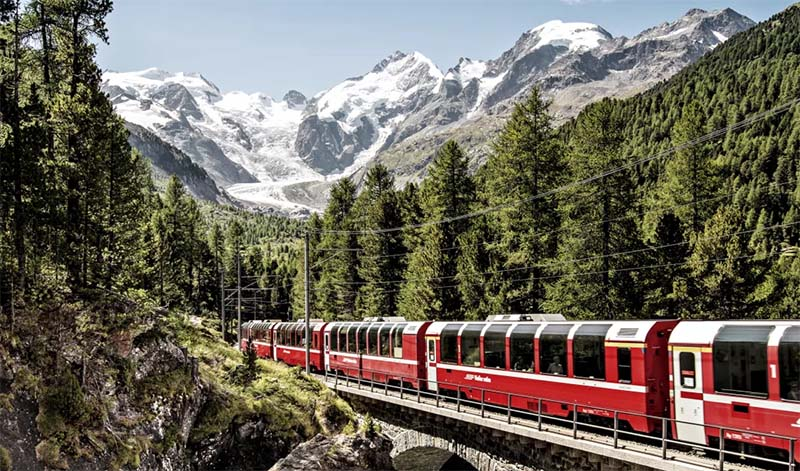

Quem Somos
Rail View
Rail View nasceu com a missão clara e audaciosa de revolucionar e transformar a gestão ferroviária global. Unimos tecnologia de ponta e inovação para moldar a infraestrutura do amanhã, desenvolvendo soluções avançadas que integram visão computacional, Internet das Coisas (IoT) e análise de dados em tempo real.
Nossa marca e nossas tecnologias foram meticulosamente projetadas para responder às demandas mais complexas de um sector vital, onde margens para erro não existem. Entregamos o que o mercado ferroviário exige como prioridade absoluta:
Precisão Cirúrgica: Monitoramento rigoroso e diagnósticos exatos de ativos e trilhos.
Segurança Inegociável: Prevenção de falhas e mitigação de riscos para proteger vidas e cargas.
Alta Eficiência Operacional: Maximização da produtividade, redução de custos e otimização do tempo de atividade.
Na Rail View, transformamos dados complexos em decisões inteligentes e imediatas, garantindo que o setor ferroviário siga avançando com máxima performance e total confiabilidade.
